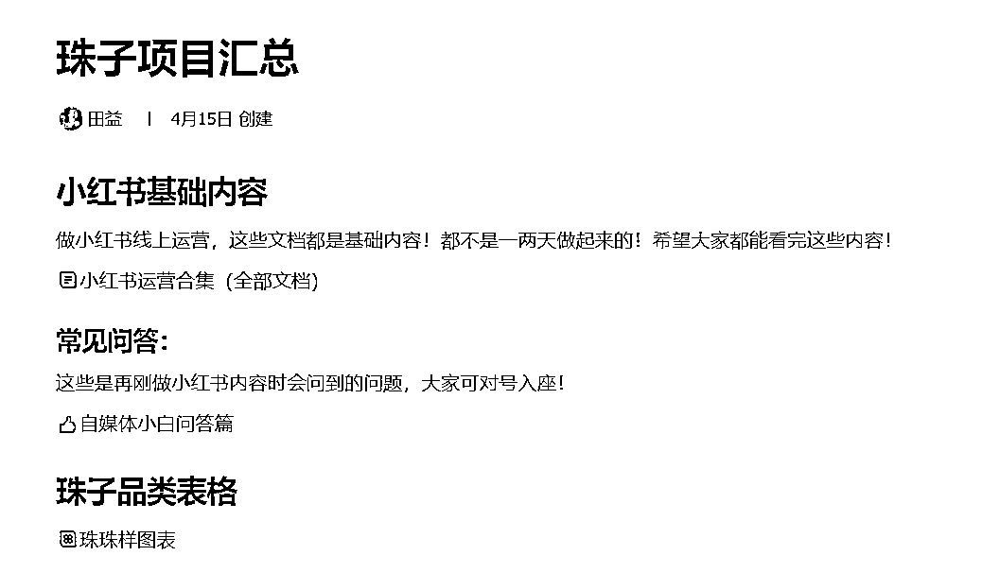

来源：https://vow6kdbiak.feishu.cn/docx/Q9ehdjY7joCF6Ix4zoDcChqpncb
适合人群：打算做倒爷、做中间商、想做b端批发的的朋友
项目红利：3（满分5）
启动成本：低
收入天花板：看个人努力程度
变现速度：中等
上手速度：快
今天邀请到的是@阿甜，她通过小红书铺量的方式获客引流，当天就引流批发大户300+，今天带来她的分享，希望能给大家带来一些启发呀～
阿甜的联系方式wx+ 77296403
找了24个账号，同时铺量，只要发布，就有精准客资！
如果你打算做倒爷、做中间商、想做b端批发的都可以参考这篇内容！
特别是针对你有货源，想做电商、想做小红书素人铺量打粉都可用！
给义乌工厂获客，产品是亚克力串珠
只要按照sop发布就一定有客资
加到工厂老板vx，老板直呼：很多人！
那时候是二月，市场【打粉】这个词还不常见，我们都说【引流获客】【倒客资】
其实当时这并不是我最想做的，因为当时在做数字人项目，你们也可参考：
所以我给珠子老板聊，想把这个账号给他！但是他们实在没空运营，学习也没时间
所以还是我在运营！但是我把置顶的【珠子】换成了其他，因为接到手累！
有直接到义乌线下看货的5位
虽然消极对待，但是人还是非常多！五月还不停有单子过去~
当时做这个也是偶然
我楼下有个珠子工厂，经常去看货，关系不错，打算做义乌倒爷
义乌不缺工厂、不缺产品！但是更多创业者没有这个渠道
我应该要打通这两方，我在中间赚钱
我就把这个仓库发到了小红书，数据是百赞（目前还在跑），后台全是私信消息！
都是问：如何拿货！（这个不就是我们做生意最想要的结果吗？）
如果我把这些人直接给工厂，我拿中间费用也很香！
那时候是2月，市场这个打粉概念还没兴起，但是我觉得是个机会
为了验证自己这种，不出镜、成本极低的方法，我开始找24名伙伴做测试！
我写了sop，图片拍了很多，让他们直接按照我的sop去抄！
结果是：只要发了一定有客资！要知道如果去1688烧钱，一个月烧几万块啊！
所以你只要给义乌老板算这笔帐，他们都懂！
因为其中有部分是做的直播和线下实操，所以sop案例部分不全，但是90%的框架都在这里了！
而且在链接里，拍了几百张珠子图片，让大家直接拿来就能用！
当有很多人咨询后，这个问题和我之前遇到的一样！
一定有很多人问材质、颜色、价格、重量等等~
所以我们必须要标准起来，不能让他们在几百种珠子里面去选择！
遇到上述问题后，我们必须要尝试调整产品
义乌工厂不缺产品，但是工厂当时一共就两种售卖模式：
在这里说一个义乌信息差：很多工厂只做批发，大部分零售都是二手
如果你想做2c用户的话，他们很欢迎！而且你不用压货！不用压货就不用给钱啊！
先说我这边当时的业务：
单色、单珠、单品，一包200颗！他们一共几百种珠子，内行人懂，我们看得眼花
一包300ml，单包价格29.9，都是直播方式出，没有开除1688以外的任何店铺
批发量太大，价格我这边不方便把控，重量、邮费总要问老板很麻烦
单笔卖价格太低，分品太麻烦！而且都要直播~拼多多要烧钱，本来就是批发商，家都懒得搞这些！
所以最好是做批发！而且是针对小红书轻创业的批发！
后来发现有很多宝妈、副业群体也想加入，当时的单色单珠的批发对他们来说不友好
所以我做了199套餐，3000ml小批量批发的模式
所以我带测试的24个伙伴在小红书开店，199套餐，混珠3000ml，价格是抖音的将近一半
如果光卖这个产品，只能赚他产品的钱，轻批发199，其实我只赚几十块
还要分给24位伙伴，利润更薄！
我必须要扩大链路，往上赚一层，而且最好是0成本的，比如：知识付费
所以我做了针对素人创业者的sop，给了他们8个不同的人设去打
比如：串珠创业、电商创业、朋友圈售卖、摆摊达人等等身份~
因为他们不会发小红书，于是我加长链路，给他们培训，如何做小红书
开始我们都是【大货】素材，针对批发的！如果我们要做宝妈副业、轻创业市场，图片就应该变化
所以我还拍了一些单串珠子的素材，去迪士尼拍摄的，这样大家卖单串也能出售，不用批发也可了
我做了这个内容：
这里包含了小红书基础运营和我自己出的系统课+答疑+sop+产品，形成闭环~

在珠子产品跑通后，我看到了更大的义乌市场
小红书在义乌是新的存在，而且义乌不缺创业者
我应该要做的是：
1、联系更强大的供应链，因为他们要更多客户
2、对接创业者，大家在找品，我可以给他们对接
3、给两头都能培训小红书，一个做批发，一个做零售，也不影响
4、可以给义乌老板、义乌创业者做IP孵化咨询，扩大声量
这个是我的测试项目，证明这个是完全能跑通的，但是我现在并没把精力都放这里
我的身份其实就是一个精选联盟，我把市场上看中的品握在手里，然后去拉创业者对接
我可以拿供应链货盘的钱，也可以收创业者的费用！这条链路看起来没问题
但是问题很大，这个也是我为什么不投入更大精力的原因！
既然我能跑前端获客，为什么不直接做高客单呢？
所以我从义乌产品这里找到的经验是，我并没有那么喜欢做货，并不喜欢和货打交道
我要和b端商家、企业、高客单人群打交道
我才能快速进步和破圈！（嘿嘿，这里省下n多字）
我才创业第一年，创业是一件有难度，并且长期会做下去的事！
我不在意我放弃了这个项目，因为我不用每天都在义乌的货盘里谈价对接
而是我要做好自己的账号，让更多牛掰的人来链接我
要把我们都有的能力释放出来，把盘子做起来，并不用很大
只要在一个小范围能有稳定现金流就是一个很好的开始了！
感谢你看到这里，或许很多人就离开了~
以后做完一个项目，都希望把复盘总结放起来
如果你现在比较迷茫，也许还在寻找自己的增长盘
没关系，因为这个就是一个开始！
别低估了十年后自己的能量，世界很大，创业更是体力活！
保证好自己身体的前提下，再让我们在创业的风浪里乘风破浪！
愿你我更加强大、更加沉稳、更加幽默又多金！！！哈哈哈哈！
当然，也不要想太多，不行动！
就是边做边修改，边复盘边迭代，反思配合行动，了解自己的内心
认识到自己真正想要去做的事和使命
找到你的天赋和热爱！
好了，就说到这里！~~